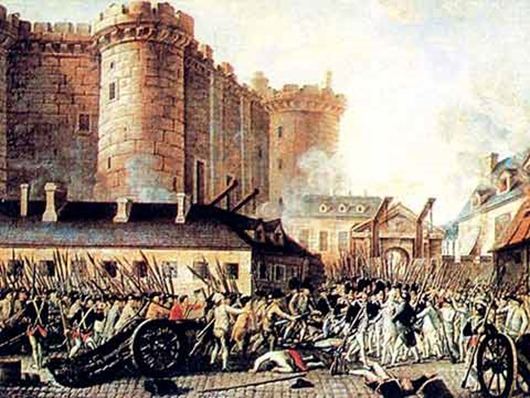

Eventos históricos que mudaram o mundo
Para voltar à página inicial, clique no botão abaixo.
Página inicialGuerras Napoleônicas

As Guerras Napoleônicas ou Guerras Napoleónicas foram uma série de conflitos colocando o Império Francês, liderado por Napoleão Bonaparte, contra uma série de alianças de nações europeias. Essas guerras revolucionaram os exércitos e táticas dos países da Europa, com grandes tropas sendo deslocadas para o combate de forma nunca antes vista no continente
- Localização: Europa, Oceano Atlântico, Rio da Prata, Oceano Índico, Cáucaso, América do Norte, Mar Mediterrâneo, Mar do Norte
- Data: 1803 - 1815
- Desfecho: Derrota do Império Francês
Motivo das Guerras:
Uma das principais marcas da Era Napoleônica, iniciada quando Napoleão chegou ao poder, foi o expansionismo bonapartista, que buscou conquistar áreas na Europa e fora dela, expandindo o Império Francês por meio da anexação de diferentes regiões. Na tentativa de conter esse expansionismo e seus desdobramentos, diversas nações europeias formaram alianças contra a França para enfrentá-la nas Guerras Napoleônicas, formadas por diferentes fases, iniciadas ainda antes de Napoleão ser aclamado imperador.
A queda da Bastilha
Foi o assalto popular à Bastilha, antiga prisão símbolo da opressão do Antigo Regime francês. A queda da Bastilha foi considerada um grande marco na época, pois simbolizou o início da queda do Antigo Regime e contribuiu para difundir o sentimento revolucionário – naquele momento concentrado em Paris – para toda a França, tanto nas cidades menores como nos agrupamentos rurais.Esse evento foi considerado pelos historiadores como o início da Revolução Francesa, um período da história da França marcado por grande agitação social e política. Além disso, esse episódio foi estabelecido como referência pelos historiadores para determinar o início cronológico do período conhecido como Idade Contemporânea.
